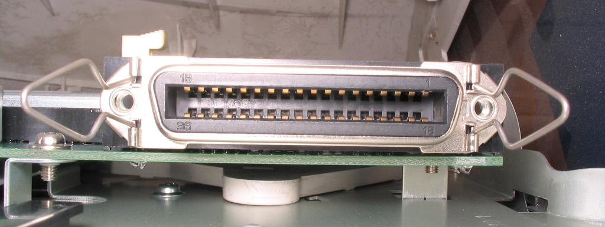
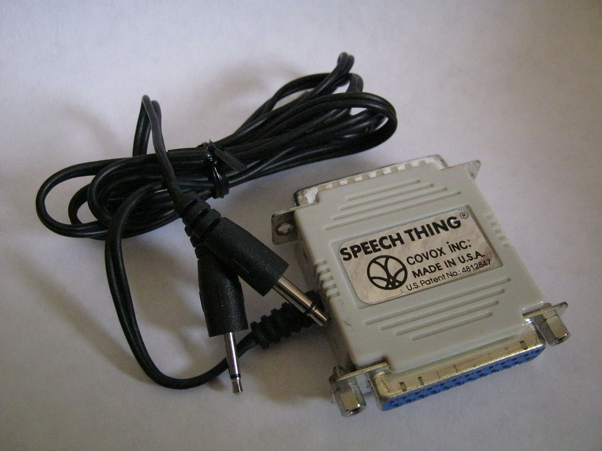
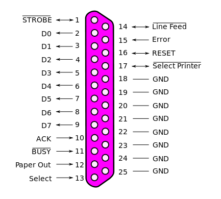

Перевод статьи: Parallel port
Автор: Маури Марковиц (Maury Markowitz) и другие
Лицензия: Creative Commons Attribution-ShareAlike License
Параллельный порт - это разновидность компьютерного интерфейса для подключения периферийных устройств. Название указывает на способ передачи данных. Параллельные порты отправляют несколько бит данных за раз, параллельно, в отличие от последовательных интерфейсов, которые отправляют по одному биту за раз. Для этого в кабеле и разъёме параллельного порта имеется несколько линий данных - больше чем в последовательных портах, в которых имеется только одна линия данных.
Существует множество типов параллельных портов, но понятие чаще всего ассоциируется в портом принтера или портом Centronics, который имелся на большинстве персональных компьютеров с 1970-х до 2000-х годов. Он был фактическим промышленным стандартом в течение многих лет и впоследствии был стандартизован как IEEE 1284 в конце 1990-х, где были определены двунаправленные версии порта EPP (Enhanced Parallel Port - улучшенный параллельный порт) и ECP (Extended Capability Port - расширенный параллельный порт). В наши дни интерфейс параллельного порта практически не используется из-за распространения устройств USB (Universal Serial Bus - универсальная последовательная шина), а также сетевой печати на принтеры, подключенные через Ethernet и Wi-Fi.
Изначально на компьютерах, совместимых с IBM PC, интерфейс параллельного порта был известен как Parallel Printer Adapter - адаптер параллельного принтера. Он был спроектирован для работы с принтерами, использующими расширенный IBM 8-битный набор символов ASCII для печати текстов, но также мог использоваться для подключения других периферийных устройств, таких как, например, графические принтеры.
Доктор Эн Вонг (Dr. An Wang), Роберт Ховард (Robert Howard) и Прентис Робинсон (Prentice Robinson) начали разработку недорогого принтера в Centronics - дочерней компании Wang Laboratories, которая производила специализированные компьютерные терминалы. Принтер использовал принцип матричной печати, был оснащён печатающей головкой, содержащий семь иголок, выстроенных в вертикальный ряд и соединённых с соленоидами. Когда ток протекал через соленоиды, иголки выдвигались вперёд, ударяя по бумаге и оставляя точку. Для создания полного изображения символа печатающая головка подавала ток на указанные иголки для создания одного вертикального шаблона, затем печатающая головка сдвигалась немного правее и процесс повторялся. В первоначальной модели изображение символа обычно печаталось в виде матрицы размерами семь точек в высоту и пять точек в ширину. В модели "A" использовалась печатающая головка с девятью иголками, которая формировала изображения символов размерами 9 на 7.
Оставалась задача отправить на принтер данные в кодировке ASCII. Хотя последовательный порт требовал минимального количества выводов и проводов, он требовал, чтобы устройство помещало поступающие данные в буфер бит за битом и превращало их обратно в многобитные значения. Параллельный порт упрощал эту задачу, так как значение в кодировке ASCII целиком умещалось на выводах. В дополнение к семи выводам для данных, системе также требовалось несколько выводов для управления и общий провод. К счастью, у Вонга имелся запас из 20000 36-контактных микроразъёмов ленточного типа, которые первоначально должны были использоваться в одной из их ранних моделей калькуляторов. Для интерфейса требовался только 21 из этих контактов, а оставшиеся были подсоединены к общему проводу или вовсе не использовались. Разъём стал так часто ассоциироваться с Centronics, что теперь общеизвестен как "разъём Centronics".
Принтер Centronics Model 101, оснащённый таким разъёмом, был выпущен в 1970 году. Компьютер отправлял символы в кодировке ASCII на принтер через 7 или 8 выводов для данных, подтяжка которых к +5 Вольтам соответствовала 1. Когда данные были готовы, компьютер подтягивал вывод STROBE к напряжению 0 Вольт. Принтер отвечал высоким уровнем напряжения на линии BUSY, печатая символ, а затем возвращал BUSY снова к низкому уровню напряжения. После этого компьютер мог отправить следующий символ. Другие действия выполнялись при получении по линиям данных управляющих символов, таких как CR или EOF. Компьютер также мог заставить автоматически начинать печать с новой строки, выставляя высокий уровень напряжения на линии AUTOFEED, и поддерживая его на этом уровне. Компьютер должен был внимательно следить за линией BUSY, чтобы не подавать данные на принтер слишком быстро, особенно во время длительных операций, таких как подача бумаги.
Интерфейс со стороны принтера вскоре превратился в промышленный стандарт де факто, но со стороны компьютера производители использовали различные разъёмы, поэтому требовались различные кабели. Например, в продукции NCR использовался 36-контактный микроразъём ленточного типа с обеих сторон, на ранних системах VAX использовался разъём DC-37, в продукции Texas Instruments использовался 25-контактный разъём на краю печатной платы, а Data General использовали 50-контактный микроразъём ленточного типа. Когда IBM реализовали параллельный интерфейс в IBM PC, они использовали разъём DB-25F со стороны компьютера, создав таким образом ныне известный параллельный кабель с разъёмом DB-25M на одном конце и 36-контактным микроразъёмом ленточного типа с другой стороны.
Теоретически, порт Centronics мог передавать данные со скоростью 75000 символов в секунду. Это было намного быстрее, чем скорость принтера, который в среднем мог печатать около 160 символов в секунду, из-за чего большую часть времени порт простаивал. Производительность определялась тем, насколько быстро компьютер ответит на сигнал BUSY от принтера, который с помощью этого сигнала запрашивает новые данные. Для улучшения производительности в принтер стали встраивать буферы, чтобы компьютер мог отправлять данные быстрее - очередями. Это не только снизило (или вовсе устранило) задержки из-за ожидания следующего символа от компьютера, но также освободило компьютер для других операций, без снижения производительности. Производительность в последующем улучшалась использованием буферов для хранения нескольких строк и печатью в обоих направлениях, чтобы устранить задержки, требовавшиеся для перемещения печатающей головки к левому краю страницы. В случае с принтерами Centronics моделей 102 и 308, эти изменения позволили поднять производительность более чем в два раза.
В 1981 году IBM выпустила IBM Personal Computer, который содержал разновидность интерфейса Centronics. С этим компьютером можно было использовать только принтеры с логотипом IBM (это были принтеры Epson, выпускавшиеся под брендом IBM). IBM приняла в качестве стандарта параллельный кабель с разъёмом DB25F со стороны компьютера и с 36-контактным разъёмом Centronics со стороны принтера. Вскоре производители стали выпускать принтеры, которые были совместимы с обеими реализациями стандарта - от Centronics и от IBM.
Оригинальный адаптер параллельного порта IBM PC был спроектирован в 1981 году и поддерживал двунаправленную передачу 8 бит данных. Это позволяло использовать порт для других целей, не только для вывода на принтер. Поскольку устройство с каждой стороны могло осуществлять запись на линии данных, требовалось чтобы и порт со стороны компьютера был двунаправленным. Эта функция использовалась редко и была удалена в последующих выпусках аппаратного обеспечения. Годами позже, в 1987 году, IBM вновь внедрила двунаправленный интерфейс в компьютерах серии IBM PS/2, где функция могла быть включена или выключена, чтобы достичь совместимости с приложениями, не ожидавшими, что порт принтера может быть двунаправленным.
По мере роста рынка принтеров появлялись новые типы механизмов печати. Они часто поддерживали новые функции и статусы ошибок, для которых не было достаточно существующих выводов состояния. Хотя оборудование IBM позволяло передавать данные в обе стороны, воспользоваться этой возможностью было не просто, из-за чего поначалу она не использовалась. По этим причинам в 1992 HP внедрила в свой принтер LaserJet 4 систему Bi-Tronics. В ней использовались существующие контакты статуса ERROR, SELECT, PE и BUSY, которые образовывали полубайт, так что 8-битное значение можно было передать в два этапа. Режим Bi-Tronics, ныне известный как полубайтовый режим, выбирался выставлением высокого уровня напряжения на SELECT, а данные передавались когда компьютер переключал AUTOFEED на низкий уровень напряжения. Другие изменения в процедуре согласования увеличили производительность, подняв её до 400000 символов в секунду при передаче с компьютера на принтер и примерно до 50000 символов в секунду при передаче в обратном направлении. Важным преимуществом системы Bi-Tronics было то, что её целиком можно было реализовать программно и использовать неизменное аппаратное обеспечение - для передачи данных от принтера к компьютеру использовались те же контакты и линии, что и раньше.
С появлением новых устройств, таких как сканеры и многофункциональные устройства, требовалась более высокая производительность, которую не могли обеспечить ни Bi-Tronics, ни протокол IBM. Вместо них популярность приобрели два других стандарта. EPP (Enhanced Parallel Port - улучшенный параллельный порт) изначально был определён Zenith Electronics и напоминал концепцию байтового режима от IBM, но отличался в процедуре согласования, позволяя достичь скорости в 2 мегабайта в секунду. ECP (Extended Capability Port - расширенный параллельный порт) фактически является совершенно новым портом в том же физическом корпусе, с поддержкой прямого доступа в память, основанным на шине ISA, и кодированием повторяющихся символов для сжатия данных, что особенно полезно для передачи простых изображений, таких как факсы или чёрно-белые отсканированные изображения. ECP предоставляет производительность до 2,5 мегабайт в секунду в обоих направлениях.
Все эти улучшения стали частью стандарта IEEE 1284. Первое издание от 1994 года включало исходный режим Centronics ("совместимый режим"), полубайтовый и байтовый режимы, а также изменения процедур согласования, которые уже широко использовались. Исходная реализация Centronics требовала переключения BUSY при каждом изменении на любой из линий данных, в то время как IEEE 1284 требует переключения BUSY с каждым принятым символом. Это уменьшило количество переключений BUSY и прерываний обеих сторон. Обновление от 1997 года стандартизировало коды статуса принтера. В 2000 году в стандарт попали режимы EPP и ECP, несколько разъёмов, типов кабелей и метод создания цепочек до восьми устройств на одном порту.
Некоторые компьютеры и принт-серверы могут использовать сигнал STROBE с относительно низким уровнем напряжения или быстрым переключением. Любая из этих проблем может повлечь отсутствие печати, прерывистую печать, пропуск, повтор символов или печать мусорных данных. Некоторые модели принтеров оснащены переключателем или настройкой для установки сигнала BUSY для каждого символа, а другим может потребоваться согласующий адаптер.
Dataproducts внедряла совершенно другую реализацию параллельного интерфейса для их принтеров. Они использовали разъём DC-37 со стороны компьютера и 50-контактный разъём со стороны принтера - либо DD-50 (иногда ошибочно называемый "DB50") или прямоугольный разъём M-50; M-50 также часто называют Winchester. Параллельные порты Dataproducts существовали в коротком варианте с кабелем длиной до 15 метров и в длинном варианте - с кабелем диной до 150 метров, который использовал разностную сигнализацию. Интерфейс Dataproducts можно было встретить на многих мейнфреймах вплоть до 1990-х годов, а многие производители принтеров в качестве опции предлагали интерфейс Dataproducts.
Со временем спектр устройств, проектировавшихся для работы через параллельный порт, становился шире. Большинство устройств были однонаправленными устройствами, что подразумевало только ответ на информацию, отправленную с компьютера. Однако некоторые устройства, такие как Zip-дисководы, работали в двунаправленном режиме. Принтеры также со временем стали двунаправленными системами, позволяющими отправлять разнообразную информацию о собственном состоянии.
До появления USB параллельный интерфейс был приспособлен работы с большим количеством различных периферийных устройств, помимо принтеров. Возможно одними из самых ранних устройств, предназначенными для использования с параллельным портом, были аппаратные ключи для защиты от копирования программ. Zip-дисководы и сканеры стали первопроходцами, за которыми последовали внешние модемы, звуковые карты, веб-камеры, геймпады, джойстики, внешние жёсткие диски и приводы CD-ROM. Некоторые из самых ранних мобильных MP3-плееров для записи музыки на устройство требовали подключения к параллельному порту. Существовали адаптеры для работы со SCSI-устройствами через параллельный порт. Другими устройствами, подключаемыми к параллельному порту, были программаторы EPROM и контроллеры оборудования.
Большинство компьютеров, совместимых с PC, в 1980-х и 1990-х имело один из трёх портов с интерфейсами, определёнными ниже:
Если по адресу 0x3BC не было порта принтера, то для BIOS первым логическим параллельным портом становился второй порт ввода-вывода из списка - 0x378, а вторым логическим параллельным портом становился следующий по списку порт - 0x278 . Иногда порты принтера настраиваются переключателями для совместного использования прерывания несмотря на то, что каждый из них обладает собственным адресом ввода-вывода (то есть в любой момент времени только один из них может управляться прерываниями). В некоторых случаях BIOS поддерживает четвёртый порт, но его базовый адрес у разных производителей значительно отличается. Поскольку зарезервированная запись для четвёртого логического порта принтера в BDA (BIOS Data Area - области данных BIOS) на компьютерах PS/2 и на компьютерах с S3-совместимыми графическими картами используется совместно с другими устройствами, для большинства таких систем требуется специальный драйвер. В DR-DOS 7.02 привязка портов BIOS может изменяться при помощи директив LPT1, LPT2, LPT3 (и не обязательной директивы LPT4) в файле CONFIG.SYS.
В системах на основе DOS логические параллельные порты, обнаруживаемые BIOS, доступны под именами LPT1, LPT2 или LPT3 (соответствуют логическим параллельным портам 1, 2 и 3, соответственно). Эти имена произошли от словосочетаний Line Print Terminal - строчный печатающий терминал, Local Print Terminal - локальный печатающий терминал или Line PrinTer - строчный принтер. Подобное соглашение об именовании использовалось в системах ITS, DEC, а также в CP/M и 86-DOS (LST).
В DOS доступ к принтерам на параллельных портах можно получить прямо из командной строки. Например, команда "TYPE C:\AUTOEXEC.BAT > LPT1:" перенаправит содержимое файла AUTOEXEC.BAT в порт принтера. Устройство LPT1 также доступно под псевдонимом PRN. Некоторые операционные системы (например, многопользовательские DOS) позволяли различным образом изменять это фиксированное соответствие. Некоторые версии DOS использовали резидентные драйверы-расширения, предоставляемые командой MODE. В других (в DR-DOS версии 7.02 и выше) пользователи могли изменить соответствие директивой PRN=n в файле CONFIG.SYS. DR-DOS 7.02 также предоставлял встроенную поддержку порт LPT4, если его поддерживал нижележащий BIOS.
В DOS и Windows, даже в Windows XP, в качестве имён файлов нельзя использовать имена PRN, CON, AUX и несколько других имён. В Windows 95 и 98 существовала даже уязвимость, вызывавшая крах компьютера, если пользователь вводил в адресной строке Windows Explorer "C:\CON\CON", "C:\PRN\PRN" или "C:\AUX\AUX". В Microsoft выпустили исправление, но только что установленные операционные системы Windows 95 и 98 по-прежнему содержат эту ошибку.
Специальная команда "PRINT" приводит к тому же результату. Во многих случаях Microsoft Windows по-прежнему ссылается на порты по этим именам, хотя часто это бывает скрыто.
В SCO UNIX и Linux первый параллельный порт доступен через файловую систему как /dev/lp0. Устройства IDE в Linux могут использовать драйвер paride (parallel port IDE - IDE через параллельный порт).
Звуковое устройство Covox Speech Thing
Параллельный порт был заменён USB и компьютерными сетями, позволяющими соединяться как с принтерами, так и с другими устройствами.
Многие производители персональных компьютеров и ноутбуков считают параллельный порт устаревшим и больше не добавляют его. Компьютеры меньших размеров не имеют достаточно места для разъёма параллельного порта. Для использования принтеров, поддерживающих только параллельный порт, на компьютерах, содержащих только USB-порты, существуют адаптеры USB-параллельный порт. Это карты PCI (и PCI-express), содержащие параллельные порты. Существуют также принт-серверы, позволяющие получить доступ к интерфейсу параллельного порта через сеть. Микросхемы USB-в-EPP также позволяют использовать устройства, не являющиеся принтерами, в современных компьютерах без параллельного порта.
Для радиолюбителей параллельный порт всё ещё является простейшим способом подключения внешних схем. Он быстрее, чем другие устаревшие порты (последовательный порт), не требует преобразования из последовательного кода в параллельный, и требует меньше интерфейсной логики и программного обеспечения, по сравнению с интерфейсом USB. Однако, операционные системы Microsoft Windows после 95/98 запрещают пользовательским программам писать напрямую в порт или читать из него без дополнительного программного обеспечения (расширений ядра). В настоящее время параллельный порт также часто используется на фрезерных станках с ЧПУ для прямого управления двигателями и приспособлениями.
Традиционно в системах IBM PC для первых трёх параллельных портов выделена конфигурация, приведённая в таблице ниже (если есть все три порта).
| Номер порта | Номер прерывания | Начальный адрес | Конечный адрес |
|---|---|---|---|
| #1 | IRQ 7 | 0x3BC | 0x3BF |
| #2 | IRQ 7 | 0x378 | 0x37F |
| #3 | IRQ 5 | 0x278 | 0x27F |
Если имеется неиспользуемый слот, порты с остальными адресами передвигаются вверх. (Например, если нет порта 0x3BC, то порт 0x378 становится первым логическим портом.) Базовый адрес 0x3BC обычно используется параллельными портам на видеоадаптерах MDA и Hercules, а параллельные порты материнской платы или карт расширения иногда поддерживают настройку базового адреса. Поэтому, при отсутствии монохромного видеоадаптера, обычно первому логическому порту (а также драйверу устройства LPT1 в DOS) соответствует адрес 0x378, хотя по умолчанию им по-прежнему является адрес 0x3BC (он будет выбран BIOS, если параллельный порт будет обнаружен на этом адресе). Линии IRQ обычно соответствующим образом настраиваются аппаратно. Следует избегать назначать одно и то же прерывание нескольким параллельным портам, т.к. это может привести к тому, что порты будут работать только в режиме опроса. Адреса порта, соответствующие слоту, могут быть определены чтением BDA (BIOS Data Area - области данных BIOS) по адресам 0000h:0408h.
Соответствие бита выводам SPP (Standard Parallel Port - стандартного параллельного порта):
| Адрес | Старшие биты | Младшие биты | |||||||
|---|---|---|---|---|---|---|---|---|---|
| Бит: | 7 | 6 | 5 | 4 | 3 | 2 | 1 | 0 | |
| База (порт данных) | Вывод: | 9 | 8 | 7 | 6 | 5 | 4 | 3 | 2 |
| База+1 (порт состояния) | Вывод: | ~11 | 10 | 12 | 13 | 15 | |||
| База+2 (порт управления) | Вывод: | ~17 | 16 | ~14 | ~1 |
~ указывает на аппаратную инверсию бита.
В версиях Windows, не использующих ядро Windows NT (как в DOS и некоторых других операционных системах), программы могут обращаться к параллельному порту через простые вызовы подпрограмм outportb() и inportb(). В операционных системах вроде Windows NT и Unix (NetBSD, FreeBSD, Solaris, 386BSD и т.п.) микропроцессор работает в различных кольцах защиты и доступ к параллельному порту ограничен, если не использовать необходимый драйвер. Это увеличивает безопасность и защищает от одновременного доступа к устройству. В Linux inb() и outb() могут использоваться, если процесс запущен от имени пользователя root и вызвал подпрограмму ioperm() для получения доступа к базовому адресу. Другим способом доступа к параллельному порту является использование драйвера ppdev, который поддерживает совместное использование порта и, при настройке соответствующих разрешений, может использоваться из пространства пользователя.
Во многих дистрибутивах Linux также доступна кроссплатформенная библиотека libieee1284, которая предоставляет абстрактный интерфейс к параллельным портам системы. Доступ обрабатывается в последовательности открыть-затребовать-освободить-закрыть - open-claim-release-close, что делает возможным одновременный доступ в пространстве пользователя.
У старых параллельных портов имеется 8-битная шина данных, четыре управляющих вывода (Strobe, Linefeed, Initialize, Select In) и пять выводов для контроля состояния (ACK, Busy, Select, Error и Paper Out). Его скорость передачи данных - 150 Кбит/с.
Новые EPP (Enhanced Parallel Port - улучшенные параллельные порты) имеют 8-битную шину данных и такое же количество управляющих выводов, как и у обычного параллельного порта. Новые порты достигают скорости до 2 Мбайт/с.
Расположение выводов разъёма параллельного порта таково:
| Номер вывода (DB25) | Номер вывода (36-контактный разъём) | Название сигнала | Направление | Регистр-бит | Инвертирован |
|---|---|---|---|---|---|
| 1 | 1 | Strobe | Ввод/вывод | Control-0 | Да |
| 2 | 2 | Data0 | Вывод | Data-0 | Нет |
| 3 | 3 | Data1 | Вывод | Data-1 | Нет |
| 4 | 4 | Data2 | Вывод | Data-2 | Нет |
| 5 | 5 | Data3 | Вывод | Data-3 | Нет |
| 6 | 6 | Data4 | Вывод | Data-4 | Нет |
| 7 | 7 | Data5 | Вывод | Data-5 | Нет |
| 8 | 8 | Data6 | Вывод | Data-6 | Нет |
| 9 | 9 | Data7 | Вывод | Data-7 | Нет |
| 10 | 10 | Ack | Ввод | Status-6 | Нет |
| 11 | 11 | Busy | Ввод | Status-7 | Да |
| 12 | 12 | Paper-Out | Ввод | Status-5 | Нет |
| 13 | 13 | Select | Ввод | Status-4 | Нет |
| 14 | 14 | Linefeed | Ввод/Вывод | Control-1 | Да |
| 15 | 32 | Error | Ввод | Status-3 | Нет |
| 16 | 31 | Reset | Ввод/Вывод | Control-2 | Нет |
| 17 | 36 | Select-Printer | Ввод/Вывод | Control-3 | Да |
| 18-25 | 19-30,33,17,16 | Ground | - | - | - |
Инвертированные выводы истинны при низком логическом уровне. Если они не инвертированы, то истине соответствует высокий логический уровень.
Контакт 25 на разъёме DB25 современных компьютеров может быть не подключен к общему проводу.
Интегральные микросхемы: